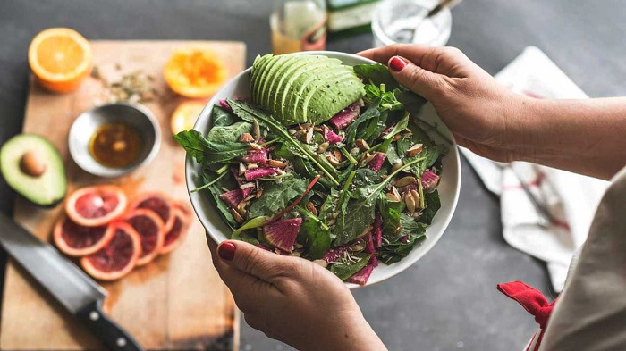
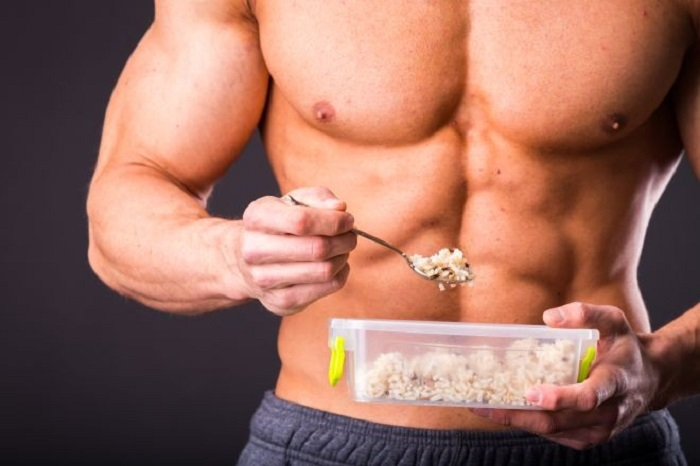
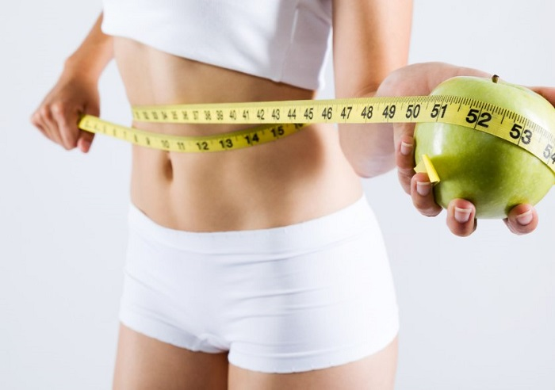
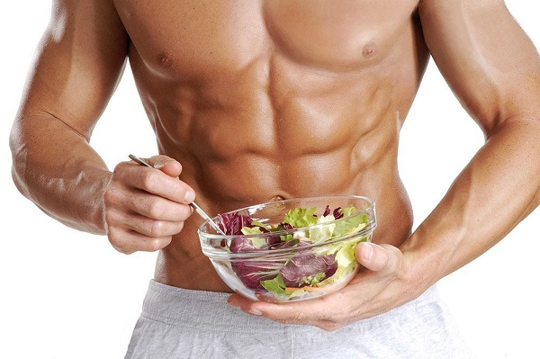

Opšti principi pravilne ishrane!
Pravilna ishrana u svakodnevnom životu treba da zadovolji sledeće principe:
01. Da je umerena - što bi značilo da se ni u čemu ne preteruje i da za sve treba naći
adekvatnu meru koja je individualno prilagođena pojedincu u zavisnosti od potreba organizma,
02. Da je raznovrsna - što podrazumeva unos svih hranljivih materija: ugljenih hidrata,
belančevina i masti kao i vitamina i minerala poreklom iz namirnica,
03. Da pokriva dnevne energetske potrebe individualno prilagođene pojedincu.

Preporuka je da u toku dana bude zastupljeno pet obroka koji podrazumevaju
tri glavna obroka:doručak, ručak , večeru.Između njih treba uvrstiti i dve užine.
Nažalost zbog današnjeg, brzog tempa života često je teško ispoštovati ovo pravilo,
a pritom još i praviti razmake od tri sata između obroka.Međutim, dobro je znati
da takvim načinom ishrane podstičemo metabolizam i dobro varenje istovremeno kontrolišući apetit.
Celodnevni primer ishrane za dodavanje misicne mase:

OBROK 1: šoljica ovsenih pahuljica+merica proteina, kompleks vitamina i minerala
OBROK 2: proteinski šejk(2 merice proteinskog blenda), 30g badema(može i lešnik, orah)
OBROK 3: 200 grama piletine (ili curetine), pirinač, salata ili neko povrće, jedna šaka badema
OBROK 4: Isto kao OBROK 2
OBROK 5: 200 grama crvenog mesa sa salatom, 2 velike kašike maslinovog ulja sa jednim kuvanim
krompirom(može i pirinač)
KAKO DO SAVRSENE LINIJE
Za mršavljenje je potrebno samo jedno - DEFICIT KALORIJA, koji
nikako ne sme biti preveliki, najbolje da to bude minus 10% od
kaloraze za odrzavanje.
Ali kako izrazunati koliko nam je kalorija dnevno potrebno, od cega
da oduzimamo tih 10%?
Po formuli! (Samo rucno, nikakvi kalkulatori po aplikacijama!!!!)
ZA ZENE:
(10 x tezina u kg) + (6,25 x visina u cm) — (5 x godine zivota) — 161
ZA MUŠKARCE:
(10 x teina u kg) + (6,25 x visina u cm) — (5 x goddine zivota) + 5
Šta je zapravo broj koji se tako dobije? To je broj kalorija koji nam je
potreban dnevno na ZIVOTNE FUNKCIJE. Dakle na disanje, na
otkucaje srca, na odrzavanje toplote.
Medjutim, normalno je da mi dnevno trošimo dosta dodatnih kalorija,
cak ¡ jednostavno drzanje kašike troši kalorije.
Tako da dobijeni rezultat iz gornje formule treba da pomnozimo sa
KOEFICIJENTOM AKTIVNOSTI
A on je sledeci:
UkoIiko se ne bavite sportom u zivotu, ne šetate, imate minimalne fizicke
aktivnosti (hodanje do prodavnice i nazad) i posao gde sedite - K.A.
je 1,2.
Lagani treninzi 1-3x nedeljno ili šetnje - 1.375
Treninzi srednjeg intenziteta 3-5x nedeljno ili posao gde ste
vecinom na nogama - 1,55.
UkoIiko imate jace treninge 5-7x nedeljno - 1,725.
lzuzetno jaki treninzi 7x nedeljno - profesionalni sportisti na
pripremama ili fizicki iscrpljujuc posao (rudari, pripadnici vojske,itd..) -1.91

Primer:
(10x53) + (6,25x175) - (5x23) - 161 = 530 + 1 093,75 - 115 - 161 =
1350
Dobijeni broj OBAVEZNO MORA DA SE POMNOZI SA KOEFICIJENTOM
AKTIVNOSTI - 1,725
1350x1,725= 2 325
DAKLE KALORAZA ZA ODRZAVANJE JE 2 325. Toliko treba
da jede da se ne bi ni gojio/la ni mršavio/la
Da hoce da smršaa, oduzeo bi 200-300 kcal.
Da hoce da se ugoji, dodao bi 300 kcal.
Nikako se ne sme smanjivati više od 200-300 kcal!!!!!
Za mršavljenje ne trebaju ni dijete ni gladovanje vec razumno
ogranicavanje i pravilno izracunat deficit.
Celodnevni primer ishrane za skidanje masnih naslaga:

OBROK 1: 3 belanca 1 žumance, tanjir zelene salate, parče sira, veličine domin, pola šolje seckanog voća
OBROK 2: Tanjir salate, kašičica maslinovog ulja, zasladiti se vocem, jabuka, bana i sl.
OBROK 3: Parče pilećeg belog mesa ili junetine, tanjir salate, pola šolje šargarepe ili krompira, 2 supene kašike
orašastih plodova, kašičica maslinovog ulja
OBROK 4: Orašasti plodovi: orasi, bademi, lešnici, do 100 gr
OBROK 5: Parče pilećeg belog mesa ili junetine, tanjir salate, pola šolje šargarepe ili krompira, 2 supene kašike nekih
orašastih plodova, kašičica maslinovog ulja